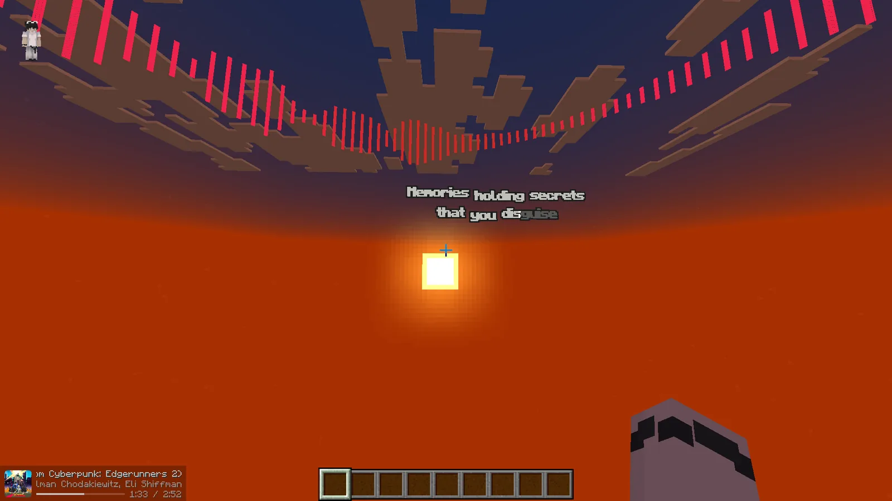
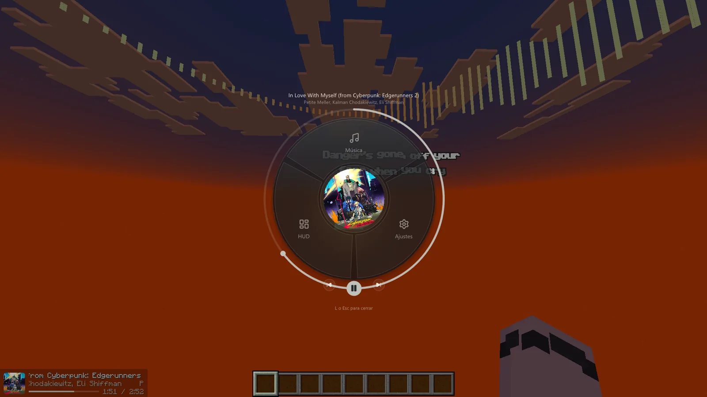
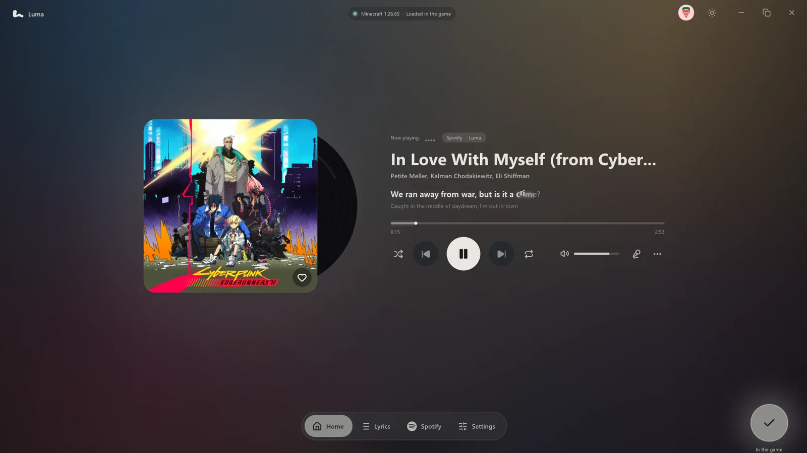
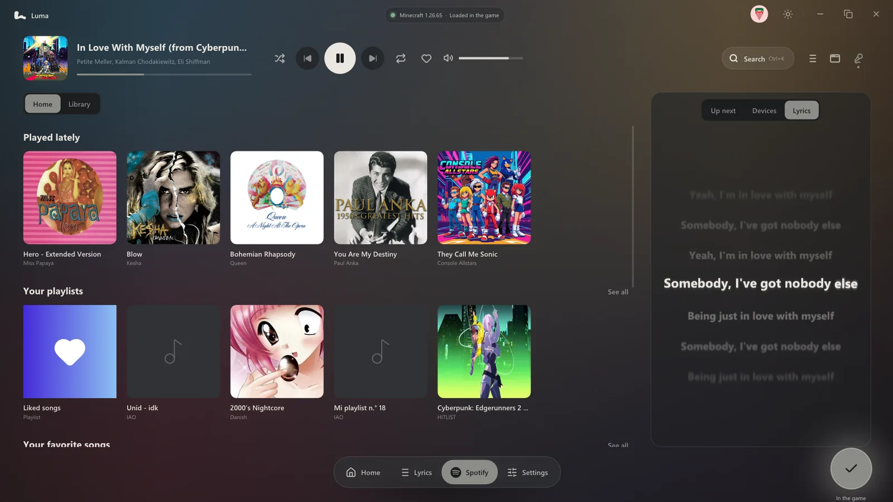
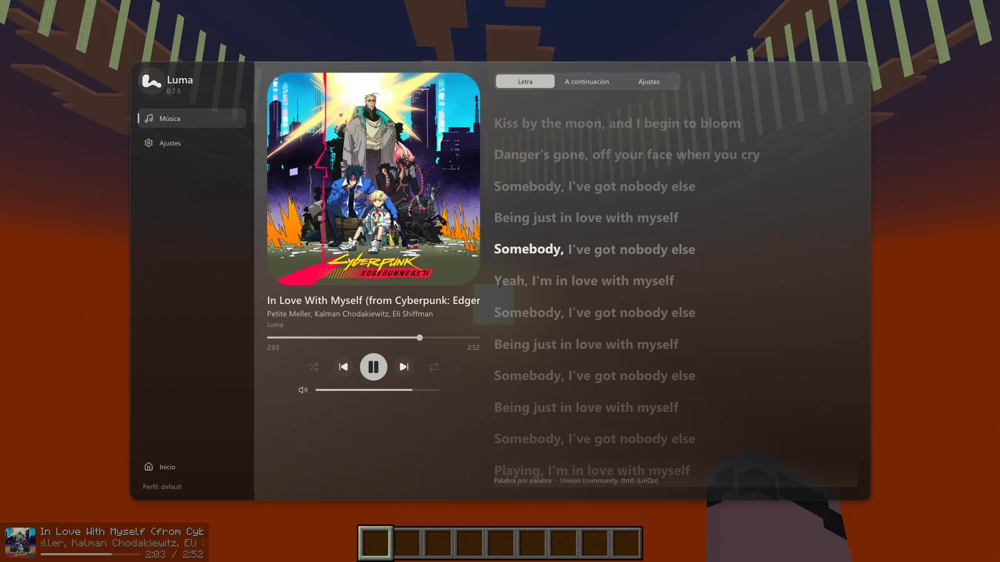
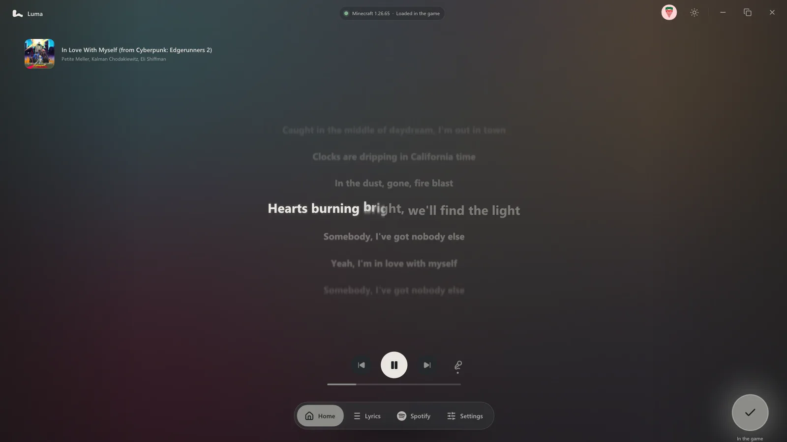

Your music. Inside Minecraft.
Luma is a free music client for Minecraft Bedrock. The song playing on your PC, its lyrics word by word and a visualizer, right in your world.
Everything for your song.

Lyric FlowThe lyrics, written in your world.
HaloYour music from the radial menu.
LauncherSpotify inside, with Luma's own player.Lyric Flow, your way.
Pick a ready-made style or make your own. Your styles work in the game and in the launcher.
- 15 fonts, Minecraft's own included
- One color, two colors, the album's colors or rainbow
- Glow, outline and shadow
- Particles around the words
- How words appear, move and leave
- In front of you, or pinned in one place
Now Playing, seven ways.
Your song in a corner of the screen. Choose the look that fits your HUD, and move it wherever you want.
See the beat.
Seven visualizers that move with your song, drawn in the sky of your world.
A launcher that's yours.
- Dark or light theme
- Tinted by the album you're playing
- Spotify inside, with Luma's own player (Premium)
- English, Spanish and Portuguese
- Updates itself, signed

Performance first.
Luma draws only what you turn on, and nothing at all while the game is minimized.
No unfair advantage.
No killaura, reach, xray or autoclicker. Not now, not later. Just music.
Works with other clients.
Luma only does music, so it runs next to the client you already use.
In your world.
Everything Luma draws, it draws for your song. Pick one to see it.

A launcher that plays along.
Open Minecraft from here and Luma comes with it. Meanwhile, your music lives here.
Updates itself from GitHub, signed. English, Spanish and Portuguese.

Top in Luma.
The songs that play the most in Minecraft, among the people who share theirs.
Songs
Artists
Anonymous: only how many people heard each song, and only songs at least 3 people heard. To add yours: launcher → Settings → Your year.
- 1Open Luma's launcher
- 2Settings → Your year
- 3Share a link, and open it here
A year in Luma.
The music someone listened to while playing Minecraft, counted by Luma's launcher.
Questions
Is it safe?
Luma is open source (GPL-3.0) on GitHub, so anyone can read what it does. It loads into the official game on your PC and doesn't touch your account or your worlds. Press End to unload it without closing the game. Some servers don't allow any client, so check their rules.
Which Minecraft does it work with?
Minecraft Bedrock for Windows, the GDK version (Minecraft.Windows.exe) from the Microsoft Store or the Xbox app. Not Java, consoles or phones.
How does it update?
The launcher checks Luma's GitHub Releases when you open it, verifies the signature and updates itself. You don't have to download it again.
Do I need Spotify Premium?
Only for Luma's own player inside the launcher. Now Playing, lyrics and the visualizer work with any app that shows up in Windows' media controls.
What does Luma send, and where?
To find lyrics, only the song's title, artist, album and length go to LiriQo and LRCLIB. For sharp covers, the title and artist go to Apple's iTunes catalog. You can turn each one off. Signing in with Microsoft is optional.
Does it cost anything?
No. Luma is free.
Press play.
Download for Windows- 1Open LumaLauncher.exe
- 2Press PLAY
- 3Play a song. Press L in the game.